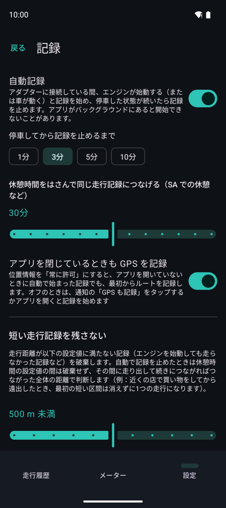
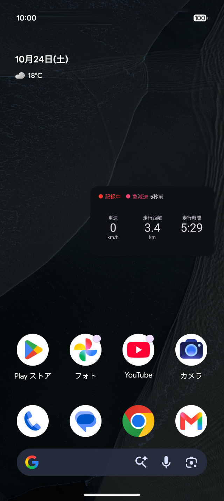

記録
アダプターに接続しているときエンジンが始動すると記録開始し、停車後一定時間経過すると記録を止めます。アプリを開いておく必要はありません。
自動記録

12345設定の「記録」ページです。
- 1自動記録のオン・オフ
- 2停車してから記録を止めるまでの時間
- 3この時間内に走り出したら、同じ走行の続きにします（サービスエリアでの休憩など）
- 4アプリを閉じている状態で始まった記録でも、最初から GPS を記録します（位置情報の権限を「常に許可」にする必要があります）
- 5これより短い走行記録は残しません
記録中は通知を出します（Android の仕様でバックグラウンドで記録を続けるために必要です）。メーターの「記録開始」「停止」で手動でも記録開始できます。
GPS（位置情報）
- 位置情報の権限が「アプリの使用中のみ許可」のときはアプリを閉じている状態で自動開始された記録では GPS を使えません。通知の「GPS も記録」をタップするか、アプリを開くことでGPSを使用したルートを記録できます
- 設定の「記録」ページの「アプリを閉じているときも GPS を記録」をオンにし、位置情報の権限を「常に許可」にすることで最初からルートを記録できます（任意）
- 端末の位置情報がオフのときや、GPS なしで記録しているときは通知で知らせます
- GPS がない区間の走行距離は OBD の車速から出します
ミニウィンドウ
記録中にナビや音楽など他のアプリに移るとメーターの主要項目を小さなウィンドウで表示します。表示する項目は設定の「インターフェース」ページで選択できます。

ホーム画面の上のミニウィンドウ例です。プレミアムプランでは記録中に起きたイベントや現在地もリアルタイムで表示することができます。